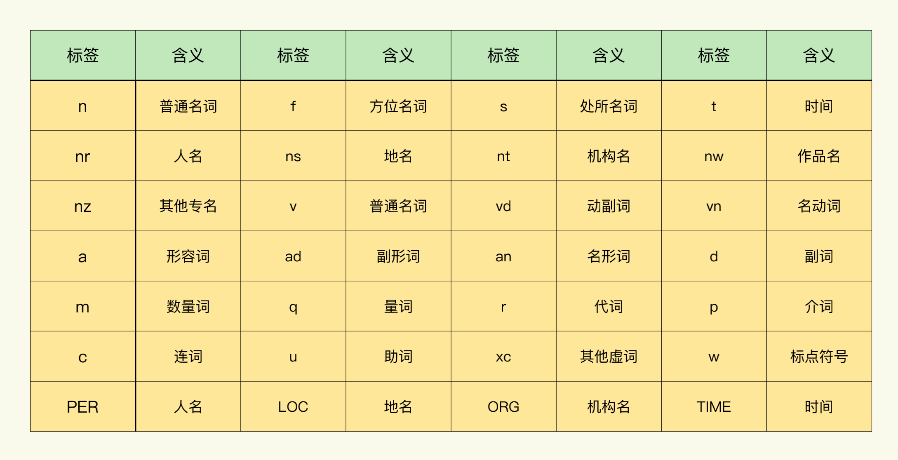

- 00 导读 入门Python的必备知识.md.html
- 00 开篇词 重复工作这么多，怎样才能提高工作效率？.md.html
- 01 拆分与合并：如何快速地批量处理内容相似的Excel？.md.html
- 02 善用Python扩展库：如何批量合并多个文档？.md.html
- 03 图片转文字：如何提高识别准确率？.md.html
- 04 函数与字典：如何实现多次替换.md.html
- 05 图像处理库：如何实现长图拼接？.md.html
- 06 jieba分词：如何基于感情色彩进行单词数量统计？.md.html
- 07 快速读写文件：如何实现跨文件的字数统计？.md.html
- 08 正则表达式：如何提高搜索内容的精确度？.md.html
- 09 扩展搜索：如何快速找到想要的文件？.md.html
- 10 按指定顺序给词语排序，提高查找效率.md.html
- 11 通过程序并行计算，避免CPU资源浪费.md.html
- 12 文本处理函数：三招解决数据对齐问题.md.html
- 13 Excel插件：如何扩展Excel的基本功能？.md.html
- 14 VBA脚本编程：如何扩展Excel，实现文件的批量打印？.md.html
- 15 PowerShell脚本：如何实现文件批量处理的自动化？.md.html
- 16 循环与文件目录管理：如何实现文件的批量重命名？.md.html
- 17 不同操作系统下，如何通过网络同步文件？.md.html
- 18 http库：如何批量下载在线内容，解放鼠标（上）？.md.html
- 19 http库：如何批量下载在线内容，解放鼠标（下）？.md.html
- 20 不同文件混在一起，怎么快速分类？.md.html
- 21 SQLite文本数据库：如何进行数据管理（上）？.md.html
- 22 SQLite文本数据库：如何进行数据管理（下）？.md.html
- 23 怎么用数据透视表更直观地展示汇报成果？.md.html
- 24 条形、饼状、柱状图最适合用在什么场景下？.md.html
- 25 图表库：想要生成动态图表，用Echarts就够了.md.html
- 26 快速提取图片中的色块，模仿一张大师的照片.md.html
- 27 zipfile压缩库：如何给数据压缩&加密备份？.md.html
- 28 Celery库：让计算机定时执行任务，解放人力.md.html
- 29 网络和邮件库：定时收发邮件，减少手动操作.md.html
- 30 怎么快速把任意文件格式转成PDF，并批量加水印？.md.html
- 春节特别放送1 实体水果店转线上销售的数据统计问题.md.html
- 春节特别放送2 用自顶至底的思路解决数据统计问题.md.html
- 春节特别放送3 揭晓项目作业的答案.md.html
- 结束语 和我一起成为10X效率职场人.md.html
- 捐赠
06 jieba分词：如何基于感情色彩进行单词数量统计？
你好，我是尹会生。
在涉及运营、市场的工作中，我们经常需要根据产品评论的情感分析，来了解某一产品的口碑。所谓的情感分析，就是指根据用户对产品的评论，分析出用户对产品的喜好程度。
最简单的，我们会区分产品的评价是正向还是负向的，然后根据反馈结果改变产品的特性。稍微复杂一点的，我们会根据情感色彩将产品的评价关键词提取出来，进行统计和分类（用于更深入的分析产品）。
如果靠人工对产品评价进行辨析，有很大的局限性：一个是不够公平，因为每个人对词语感情色彩的理解并不是完全一致的；另一个是产品评价有很多，而且还会不定期增加，人工分析很难保证及时性。
因此，在进行词语的情感分析时，我通常都会使用Python的jieba库，来自动化实现文本情感分析功能。一般需要经过三个步骤，分别是分词、优化分词结果和情感分析。
那我就先带你看看为什么要进行分词，以及如何进行分词操作。
如何分词？
要想判断一段话表达的情感是正向还是负向，就需要根据这句话中的关键词来得到情感的倾向。例如一段话中出现了“开心”“高兴”“物超所值”等正向的词语，我们就可以认定这条产品的评价是偏正向的。相反，出现“不喜欢”“差”等词语，评价就是偏负向的。
但是，要想从一句话中将这些表达情感的词一个一个找出来，就需要依靠专业的工具把一句话根据语义划分成多个词，再把表达情感的词语提取出来，进行情感分析。
为什么要先根据语义来划分词呢？这主要是因为中文句子里的每个词中间没有用空格进行分隔，没有分隔就没法进行之后的情感分析。而对中文句子按照语义进行切割的这种操作，我们就称为“分词”。
Python中有非常成熟的分词库，其中最流行的库是jieba库。在计算机中，实现语义分割的技术有两种，一种是从统计学的角度分词，另一种是从词库的角度基于TF-IDF算法实现分词。jieba就是采用第二种，基于词库的角度对文章进行自动分词的。
那我就以电商网站上的一段商品评论为例，给你演示一下jieba库是如何实现分词的。
import jieba
words1="速度快，包装好，看着特别好，喝着肯定不错！价廉物美"
words2 = jieba.cut(words1)
print("/".join(words2))
# 速度/快/，/包装/好/，/看着/特别/好/，/喝/着/肯定/不错/！/价廉物美
在这段代码中，我利用jieba库的cut()函数实现了自动分词功能。我刚才讲了，jieba分词是依靠词库实现的，词库里包含了提前准备好的词和词性。下图就是jieba词库的内容：
一鼓 ru
一鼓作气 ru
一马当先 ru
... ...
这些词库中的词，jieba是怎么识别的呢？
在你使用pip命令安装了jieba库之后，它会附带一个默认的词库。在官方文档中，将这个词库称作“字典”文件。这个文件包含了日常汉语的词语、词性。jieba库会先基于“字典”对文章中所有可能出现的词进行匹配。匹配之后，会生成句子中的汉字所有可能形成的词。然后再将这些词构成的有向无环图（DAG），并采用动态规划算法查找最大概率路径，尽可能不会将一个词拆分成单个汉字。最后再从“字典”找出基于词频的最大切分组合，把这分词的组合从句子中找出来，形成一个一个的词。
而且，为了提高分词的准确率，jieba对没有记录在字典的词（称作未登录词）也使用了分词的模型，它就是大名鼎鼎的基于汉字成词能力的HMM模型（隐马尔可夫模型）。对词库中的词和未登录词进行处理之后，jieba就可以实现自动化分词了。
不过，分词之后，我们还需要对分词结果进行优化。因为在分词结果中存在着大量的标点符号，还有“看着”“喝着”“包装” 等和表达产品评价的情感无关的词语，为了加快计算词语的情感速度、避免无关词语影响情感倾向判断，我们就要优化分词的结果。
优化分词结果
优化分词结果主要从两个方面进行优化：一方面是移除标点符号；一方面是删除和情感无关的助词、名词等。
我先来带你学习下怎么从分词结果中移除标点符号。
移除标点符号一般有两种方法：
- 删除停止词（Stop Words）；
- 根据词性提取关键词。
先来看看第一种，删除停止词。
所谓的停止词，就是指为了节省空间和提高匹配词语情感倾向的效率，在进****行情感分析前自动过滤掉的某些字或词。
停止词主要是标点符号，也可以是“啊呀呢”等语气助词。把标点符号写入停止词列表后，再使用for循环功能，将jieba分好的词和停止词列表依次匹配。如果jieba分好的词出现在列表中，就将这些词删掉。如果没有出现在列表中，就把这些词再组合成一个新的列表，后续就可以对新的列表进行情感分析。
删除停止词的代码如下。通过删除停止词，我们就可以得到只有汉字的分词结果。
words2 = jieba.cut(words1)
words3 = list(words2)
print("/".join(words3))
# 速度/快/，/包装/好/，/看着/特别/好/，/喝/着/肯定/不错/！/价廉物美
stop_words = ["，", "！"]
words4 =[x for x in words3 if x not in stop_words]
print(words4)
# ['速度', '快', '包装', '好', '看着', '特别', '好', '喝', '着', '肯定', '不错', '价廉物美']
另一种优化分词结果的方式叫做根据词性提取关键词。这种方式的优点在于不用事先准备停用词列表，jieba库就能够根据每个词的词性对其进行标注。
我这里为你提供了一张paddle（paddle是百度开源的深度学习平台，jieba使用了paddle的模型库）模式词性表作为参考，你可以根据jieba自动分析得到的词性结果，手动将助词、虚词（标点符号）移除。
- 我把这个基于词性移除标点符号的代码也提供给你：
# words5 基于词性移除标点符号
import jieba.posseg as psg
words5 = [ (w.word, w.flag) for w in psg.cut(words1) ]
# 保留形容词
saved = ['a',]
words5 =[x for x in words5 if x[1] in saved]
print(words5)
# [('快', 'a'), ('好', 'a'), ('好', 'a'), ('不错', 'a')]
在这段代码中，我在使用jieba库的posseg类实现分词的同时，也对词性进行了标注。为了让你看到更直接的结果，我只保留了形容词，因此，变量saved的列表参数就只有一个‘a’，表示保留的词类型为形容词。
如果你希望保留更多的词性，可以将词性表中代表每种词的英文缩写写入saved列表中，其中，我建议你在处理之后把形容词、副词、动词都保留下来，这些都有助于你进行下一步的语义情感分析。
在优化分词结果之后，我们就得到了只有形容词的处理结果。那么，接下来，我们需要基于这些形容词来获取产品评价的正向或负向结果，以及基于词语的情感色彩来统计单词的数量。
语义情感分析
对于已经分好词的语句，我们需要使用另一个库统计词的正向、负向情感倾向，这个库就是snownlp库。
snownlp库既能实现分词，也能计算词出现频率，以及进行情感分析。那你可能就发出疑问了：为什么不直接使用snownlp进行分词，而要使用jieba分词呢？
原因就在于，snownlp的算法问题，会让它对否定词划分得不够准确。例如“不喜欢”，snownlp会把这个词划分为两个独立的词，分别是“不”和“喜欢”。那么，在计算语义情感时，就会产生较大的误差。所以我们会先采用jieba进行分词，分词之后再采用snownlp来实现语义情感分析功能。
接下来，我带你看一下如何使用snownlp得到完成分词之后的情感分析结果。代码如下：
from snownlp import SnowNLP
words6 = [ x[0] for x in words5 ]
s1 = SnowNLP(" ".join(words3))
print(s1.sentiments)
# 0.99583439264303
这段代码通过snownlp的Bayes（贝叶斯）模型训练方法，将模块自带的正样本和负样本读入内存之后，再使用Bayes模型中的classify()函数进行分类，这样就得到了sentiments属性的值，sentiments的值表示情感倾向的方向。在snownlp中：
- 如果情感倾向是正向的，sentiments的结果会接近1。
- 如果情感倾向是负向的，结果会接近0。
可以看到，我们在刚刚的代码中得到的情感分析的结果是0.9958，非常接近1，因此这条产品的评价就是正向的。
情感倾向结果趋近于1或者趋近于0都是非常理想的情况，可以直接得到感情色彩比较强烈的产品评价。但是，有时候感情色彩不太强烈，在这种情况下，我们就需要根据评价的数值范围对评论进行分组，统计每组包含多少个评价。
这个功能也可以通过snownlp实现，我把代码写在这里，你可以参考：
positive = 0
negtive = 0
for word in words6:
s2 = SnowNLP(word)
if s2.sentiments > 0.7:
positive+=1
else:
negtive+=1
print(word,str(s2.sentiments))
print(f"正向评价数量:{positive}")
print(f"负向评价数量:{negtive}")
# 快 0.7164835164835165
# 好 0.6558628208940429
# 好 0.6558628208940429
# 不错 0.8612132352941176
# 价廉物美 0.7777777777777779
# 正向评价数量:3
# 负向评价数量:2
通过snownlp库配合jieba分词的结果，你就可以实现批量产品评论的自动语义情感分析了。同时，你还可以根据不断累积产品的评价，来持续优化你的产品。
小结
最后，我来为你总结一下对文件进行情感倾向分析的关键步骤和注意事项。实现语义情感分析功能，你必须掌握分词、优化分词结果、语义情感分析这三个步骤。
其中分词是实现中文语义分析的第一步，也是最基础的部分。分词的好坏决定了对每个词的情感进行标注的准确程度。如果默认的jieba分词没有正确地把词语划分，你也可以使用jieba自带的suggest_freq()函数进行词频调节。
举个小例子，“中”“将”两个字可以组成“中将”的词语，也可以拆开来用“我们中/将有人成功考上北大”。在不同的语言环境中，我们要通过词频调节来让它们以词的形式出现，还是以两个字的方式出现。调整的方法是：
jieba.suggest_freq(("中", "将"), tune = True)
可以看到，利用调节词频使“中”“将”都能被分出来，而不会被错误地识别为一个词“中将”，通过这种方式，就可以提升jieba的识别正确率。
在优化分词结果这一步，你可以通过减少虚词和标点符号，通过停止词、词性的选择，来降低它们对情感分析结果的干扰。
最后，你还可以为snownlp增加新的流行词和网络用语，帮你更准确地分析用户对产品的喜好程度，从而提高产品定位的精确度。
在snownlp中，通过train()和 save()两个函数把模型训练和保存之后，就能实现扩展默认字典的功能了。此外，我在工作中还会利用这种方式增加emoji表情对应的情感倾向分析功能，以此来进一步提升snownlp分析情感倾向的准确度。
我将训练模型和保存训练后的模型的函数也写在这里供你参考，希望通过训练自己的模型，能够让你的产品分析更加准确。
sentiment.train(neg2.txt,pos2.txt); # 训练用户自定义正负情感数据集
sentiment.save('sentiment2.marshal'); # 保存训练模型
今天用到的代码，我都放在了 GitHub 上，你可以点击这个链接查看。
思考题
我给你留一道思考题，我在最后一段代码分别统计了正向和负向评价的数量，你能否根据这段代码统计一段文字中包含了多少个动词、多少个名词和多少个形容词呢？欢迎你在课程评论区留言，和我一起讨论。
© 2019 - 2023 Liangliang Lee. Powered by gin and hexo-theme-book.